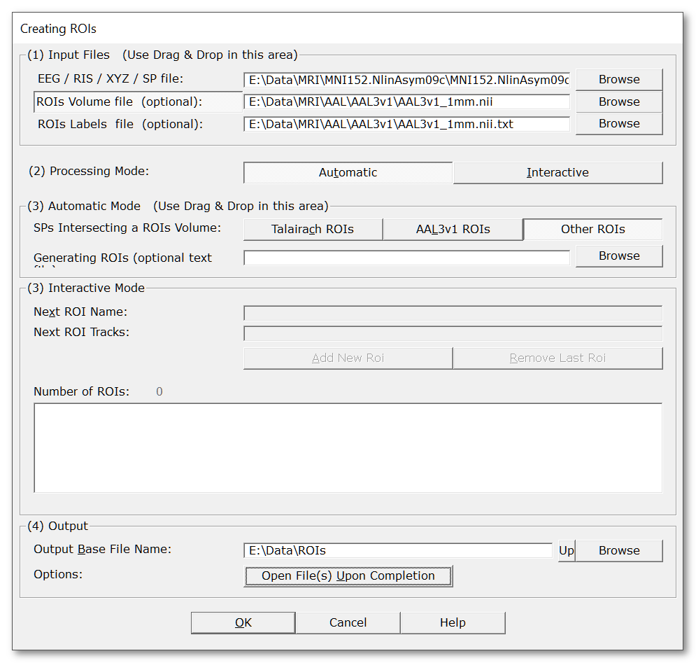

Creating ROIs
This page is about creating the .rois files, the preliminary step before actually being able to apply the rois calculus itself. The .rois files are actually just groups of indexes (of tracks, electrodes, solution points, or whatever).
Creating rois can be done either automatically or through user interaction.
Automatic creation of ROIs
Interactive creation of ROIs
Automatic creation of ROIs
This way of generating .rois files is done by looking for the intersection of the solution points with a volume mask . The generated ROIs can then be used either with the Inverse Solution display, the Statistics or the Export of RIS files.
Three options are available:
-
specifying a set of Talairach regions,
-
scanning the AAL volume mask ,
-
scanning any arbitrary volume mask that contains some region labels.
Automatic creation of ROIs from Talairach regions
This automatic generation needs a solution points file that has a Talairach transformation function attached to it . If this function is available, you can simply provide a text file naming some Talaraich regions , and Cartool will create the groups of solution points that fit within each of the named regions.
Called from the Tools | Creating Rois menu, the following dialog appears:
Note that only the relevant parameters to the current processing are being listed here:
|
Input Files |
|
|
EEG / RIS / XYZ / SP file |
In our case, provide a solution points file , with Talaraich abilities . Use Drag & Drop to save time! |
|
ROIs Volume file (optional): |
You can optionally provide a MRI file containing a grey matter / brain mask. This MRI will solely be used for generating another mask MRI, with the labels generated from the specified Talairach regions. |
|
ROIs Labels file (optional): |
(not relevant here, Talairach names are hard-encoded in Cartool). |
|
Processing Mode: |
Select Automatic |
|
Automatic Mode: |
|
|
SPs Intersecting a ROIS Volume: |
Select Talairach ROIs |
|
Generating ROIs (optional text file): |
Give a file with the Talairach regions you would like to generate. This file is actually mandatory for the Talairach case... See below for the (simplistic) syntax of the file. |
|
Output |
|
|
Output Base File Name: |
Specifies a basis for all the file names that will be generated (main directory, common file name). |
|
Options: |
|
|
Open File(s) Upon Completion |
What it says... |
ROIs from Talairach - Technical points & hints
Naming convention
The text file containing the named Talairach regions follow a very simple syntax:
-
each line is a region,
-
optionally, the line can begin with either the Right or Left keyword,
-
use one or more of the known Talairach labels listed below, separated by a comma "," . If more than one label is listed, this means the intersection of the regions will be used.
As usual (!) Cartool tries to ease your work, so when specifying the Right or Left keywords, what it does is gathering (adding together) all the labels which holds this keyword, silently compounding a whole left or right structure. Then only it will be intersected with the named Talairach region that follows. It is even possible to just specify Left or Right on a line, just to see all the structures on the left and right (respectively).
Example of valid namings:
Left Cerebrum
Right Cerebrum
Left Posterior Lobe
Right Posterior Lobe
Left Occipital Lobe, Middle Occipital Gyrus
Left Occipital Lobe, Middle Occipital Gyrus, Gray Matter
Recognized Talairach names
Here are all the labels Cartool will recognize:
Label 1
Inter-Hemispheric
Left Cerebrum
Right Cerebrum
Right Cerebellum
Right Brainstem
Left Brainstem
Left Cerebellum
Label 2
Posterior Lobe
Anterior Lobe
Frontal-Temporal Space
Limbic Lobe
Medulla
Pons
Midbrain
Sub-lobar
Occipital Lobe
Temporal Lobe
Parietal Lobe
Frontal Lobe
Label 3
Posterior Cingulate
Anterior Cingulate
Subcallosal Gyrus
Sub-Gyral
Transverse Temporal Gyrus
Uncus
Rectal Gyrus
Fusiform Gyrus
Inferior Occipital Gyrus
Inferior Temporal Gyrus
Insula
Parahippocampal Gyrus
Lingual Gyrus
Middle Occipital Gyrus
Orbital Gyrus
Middle Temporal Gyrus
Superior Temporal Gyrus
Superior Occipital Gyrus
Precentral Gyrus
Inferior Frontal Gyrus
Cuneus
Angular Gyrus
Supramarginal Gyrus
Cingulate Gyrus
Inferior Parietal Lobule
Precuneus
Superior Parietal Lobule
Middle Frontal Gyrus
Paracentral Lobule
Postcentral Gyrus
Precentral Gyrus
Superior Frontal Gyrus
Medial Frontal Gyrus
Uvula of Vermis
Pyramis of Vermis
Tuber of Vermis
Declive of Vermis
Culmen of Vermis
Cerebellar Tonsil
Inferior Semi-Lunar Lobule
Fastigium
Nodule
Uvula
Pyramis
Tuber
Declive
Culmen
Cerebellar Lingual
Hippocampus
Extra-Nuclear
Lentiform Nucleus
Amygdala
Hypothalamus
Red Nucleus
Substantia Nigra
Claustrum
Thalamus
Caudate
Cerebro-Spinal Fluid
Label 4
Gray Matter
White Matter
Label 5
Brodmann area 1
Brodmann area 2
Brodmann area 3
Brodmann area 4
Brodmann area 5
Brodmann area 6
Brodmann area 7
Brodmann area 8
Brodmann area 9
Brodmann area 10
Brodmann area 11
Brodmann area 12
Brodmann area 13
Brodmann area 17
Brodmann area 18
Brodmann area 19
Brodmann area 20
Brodmann area 21
Brodmann area 22
Brodmann area 23
Brodmann area 24
Brodmann area 25
Brodmann area 27
Brodmann area 28
Brodmann area 29
Brodmann area 30
Brodmann area 31
Brodmann area 32
Brodmann area 33
Brodmann area 34
Brodmann area 35
Brodmann area 36
Brodmann area 37
Brodmann area 38
Brodmann area 39
Brodmann area 40
Brodmann area 41
Brodmann area 42
Brodmann area 43
Brodmann area 44
Brodmann area 45
Brodmann area 46
Brodmann area 47
Caudate Tail
Caudate Body
Caudate Head
Dentate
Ventral Anterior Nucleus
Ventral Posterior Medial Nucleus
Ventral Posterior Lateral Nucleus
Medial Dorsal Nucleus
Lateral Dorsal Nucleus
Pulvinar
Lateral Posterior Nucleus
Ventral Lateral Nucleus
Midline Nucleus
Anterior Nucleus
Mammillary Body
Fourth Ventricle
Optic Tract
Anterior Commissure
Corpus Callosum
Third Ventricle
Medial Globus Pallidus
Lateral Globus Pallidus
Nucleus Accumbens Septi
Medial Geniculum Body
Lateral Geniculum Body
Subthalamic Nucleus
Lateral Ventricle
Putamen
ROIs from Talairach - Results
Within the specified output directory, you'll find:
-
The real stuff is in the .rois file, in the form of lists of indexes. To see how to make use of it, go here.
-
A verbose file .vrb, with all the parameters being used.
-
Optionally, a volume .hdr / .img that will hold the equivalent regions in the form of a mask. A voxel in this volume holds a coded value which are listed in the associated .txt file.
Automatic creation of ROIs from the AAL or any Volume Mask
This automatic generation needs a solution points file plus a volume (MRI) which content is labels of regions, like the AAL. It will then scan each labeled region from the mask and find the solution points that intersect it.
Be sure that the solution points are coregistered to the mask (origin, orientation etc...) beforehand, otherwise the intersection will be empty!
Called from the Tools | Creating Rois menu, the following dialog appears:

Note that only the relevant parameters to the current processing are being listed here:
|
Input Files |
|
|
EEG / RIS / XYZ / SP file |
In our case, provide a solution points file , for example with Drag & Drop. |
|
ROIs Volume Mask (optional): |
Actually, this is rather mandatory: provide a MRI file containing a mask for regions (like the AAL). |
|
Also provide a text file that associates the index of the volume mask with some textual/coded data. Cartool can provide for the AAL3v1 textual infos internally, see below. |
|
|
Processing Mode: |
Select Automatic |
|
Automatic Mode: |
|
|
SPs Intersecting a ROIS Volume: |
Select either AAL3v1 ROIs or Other ROIs. Both options work the same, just that in case of the AAL, you don't need the ROIs Labels file. |
|
AAL3v1 ROIS |
You can select AAL3v1 ROIs if you are sure you dropped the AAL3v1 ROIs volume beforehand. Don't use this option if you are unsure about which AAL version you are using, as the labelling and the volume might have some inconsistencies. In case of any doubt, just use the general purpose option below... |
|
Other ROIS |
Select Other ROIs for any other ROIs that are not (currently) the AAL3v1. It will need the dialog rois labels file specified to be able to work. |
|
Generating ROIs (optional text file): |
Give a file with the regions you would like to generate. If the field is empty, all possible ROIs will be generated. See below for the syntax of that file. |
|
Output |
|
|
Output Base File Name: |
Specifies a basis for all the file names that will be generated (main directory, common file name). |
|
Options: |
|
|
Open File(s) Upon Completion |
What it says... |
ROIs from Volume Mask - Technical points & hints
ROIs Labels file syntax
This file associates the indexes from the volume mask to some textual data . If this file is missing, Cartool can still use the indexes of the volume to generate ROIs.
Here is the simple syntax of that file:
-
one index + associated data per line
-
the volume index can be:
-
the first integer value of the line
-
or, if not an integer, the current line number
-
-
data following the index can be any number of textual parts separated by some space
See an example of a few lines:
1 Precentral_L 2001
2 Precentral_R 2002
3 Frontal_Sup_L 2101
4 Frontal_Sup_R 2102
...
Generating ROIs file syntax
This file will tell which ROIs you want, and only them. Note that if this file is missing, all possible ROIs will be constructed!
The syntax of the file is pretty lax, here are the rules:
-
one ROI to generate per line,
-
each line consists of one or multiple codes (specified in the MRI labels file). Each code could be:
-
either the ROI index, like 123
-
any textual association from the ROIs Labels file, like Precentral_L
-
in case of AAL, the value associated to each ROI, like 2001
-
See an example to generate 7 ROIs:
Precentral_L Precentral_R
3 4
2111 2112
ORG ORD
Cuneus_L
Cuneus_R
91 92 93 94 95 96 97 98 99 100 101 102 103 104 105 106 107 108
Although you can mix all types of codes in the same file, and even on the same line, this is of course not regarded as a good practice! Stick to one notation, you are more likely to read this file than the computer!
ROIs from Volume Mask - Results
Within the specified output directory, you'll find:
-
The real stuff is in the .rois file, in the form of lists of indexes. To see how to make use of it, go here.
-
A verbose file .vrb, with all the parameters being used.
Interactive creation of ROIs
This way of creating rois is achieved through user interaction,
by picking elements one at a time into a roi,
one roi
after the other
.
This process could be done on the following files:
After creating the ROIs, see how to make use of them for Tracks display , Potential display, Inverse Solution display, Statistics or Export of EEG files.
Interactive creation of ROIs from EEG or RIS tracks
Call Tools | Creating Rois to launch the following dialog (if you have already opened an EEG or a RIS file, the input field will be correctly pre-filled):
Note that only the relevant parameters to the current processing are being listed here:
|
Input Files |
|
|
EEG / RIS / XYZ / SP file |
In our case, provide an EEG or a RIS file, for example with Drag & Drop. |
|
ROIs Volume file (optional): |
(not relevant here). |
|
ROIs Labels file (optional): |
(not relevant here). |
|
Processing Mode: |
Select Interactive |
|
Interactive Mode: |
|
|
Next ROI Name: |
Give a name for the current roi (spaces allowed). If you let this field empty... well, Cartool will name the roi itself, and it is known to have quite a bad taste at it (something as dull as "roi1", "roi2", "roi3"...). So it is not a good idea to not fill this field. In any case, when all is done and saved to a .rois file, you can still text-edit it and change the names... |
|
Next ROI Tracks: |
Add here all the names of the tracks you wish to be in the same roi. Now, the magic:
|
|
Add New Roi |
When all the tracks you want to be in one roi are shown in the previous field, clicking this will actually create the roi from the current input. So until you have clicked it, the roi is not recorded, and you can still modify it. |
|
Remove Last Roi |
What is says. Bonus track: the list of tracks of the removed roi is restored in the dialog, so you can re-edit it if you want. |
|
Output |
|
|
Output Base File Name: |
Specifies a basis for all the file names that will be generated (main directory, common file name). |
|
Options: |
|
|
Open File(s) Upon Completion |
What it says... |
ROIs from EEG / RIS tracks - Technical points & hints
Checking ROIs do not overlap
Each time a roi is added, Cartool will check it does not overlap with any existing rois. If it finds some tracks that surreptuously sneaked in, they will be silently removed from the list of tracks before creating the roi.
This makes the interactive creation fool-proof (not that we don't trust you, but...).
Ending the interactive process
Well, when you're done, just click the OK button to actually create the .rois file. If all tracks have been used into a roi, the Add New Roi button will disable itself in great disdain...
Finally, Cartool will close the files it has opened.
Using ROIs to reorder tracks display
Within a given roi, the electrodes will also be reordered according to the exact sequence specified. Thought order does not matter for averaging purposes, it can be beneficial for displaying tracks according to a more intuitive scheme.
F.ex. with high density nets of electrodes, the native ordering is basically non-intuitive:
Then, with rois re-ordering (well this is just an example, not a winning price in design!):
See also this topic.
Final thoughts
It is not really the best way to create rois from a RIS file, because there are too many track! Think more about automatic creation in the case of inverse solution.
In the case of EEG, it is quite sexy to work from an EEG linked with electrodes coordinates, so you can also see the selection on the electrodes of the potential display, too!
ROIs from EEG / RIS tracks - Results
Within the specified output directory, you'll find:
-
The real stuff is in the .rois file, in the form of lists of indexes. To see how to make use of it, go here.
-
A verbose file .vrb, with all the parameters being used.
Interactive creation of ROIs from electrodes or solution points
Call Tools | Creating Rois to launch the following dialog (if you have already opened an electrode or a solution points file, the input field will be correctly pre-filled):

Note that only the relevant parameters to the current processing are being listed here:
|
Input Files |
|
|
EEG / RIS / XYZ / SP file |
In our case, provide an electrodes coordinates file or a solution points file , for example with Drag & Drop. |
|
ROIs Volume file (optional): |
(not relevant here). |
|
ROIs Labels file (optional): |
(not relevant here). |
|
Processing Mode: |
Select Interactive |
|
Interactive Mode: |
|
|
Next ROI Name: |
Give a name for the current roi (spaces allowed). If you let this field empty... well, Cartool will name the roi itself, and it is known to have quite a bad taste at it (something as dull as "roi1", "roi2", "roi3"...). So it is not a good idea to not fill this field. In any case, when all is done and saved to a .rois file, you can still text-edit it and change the names... |
|
Next ROI Tracks: |
Add here all the names of the tracks you wish to be in the same roi. Now, the magic:
|
|
Add New Roi |
When all the electrodes you want to be in one roi are shown in the previous field, clicking this will actually create the roi from the current input. So until you have clicked it, the roi is not recorded, and you can still modify it. |
|
Remove Last Roi |
What is says. Bonus track: the list of electrodes of the removed roi is restored in the dialog, so you can re-edit it if you want. |
|
Output |
|
|
Output Base File Name: |
Specifies a basis for all the file names that will be generated (main directory, common file name). |
|
Options: |
|
|
Open File(s) Upon Completion |
What it says... |
ROIs from electrodes or solution points - Technical points & hints
Most of these points are also relevant here!
And for the solution points?
Well, you can technically use this manual method:
-
if you have only a few rois / solution points to look after,
-
make use of the slice display to show less points at a time,
-
and be patient.
Otherwise, think about the automatic processes!
ROIs from electrodes or solution points - Results
Within the specified output directory, you'll find:
-
The real stuff is in the .rois file, in the form of lists of indexes. To see how to make use of it, go here.
-
A verbose file .vrb, with all the parameters being used.